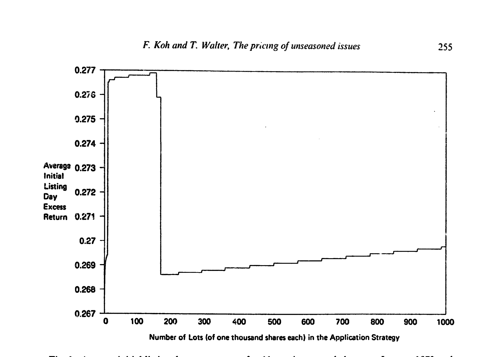
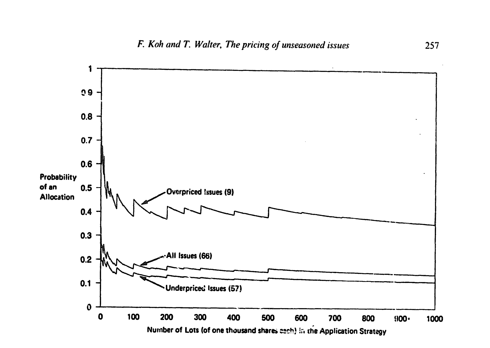
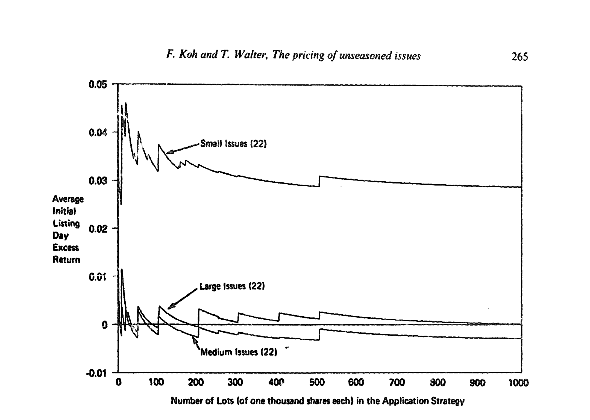
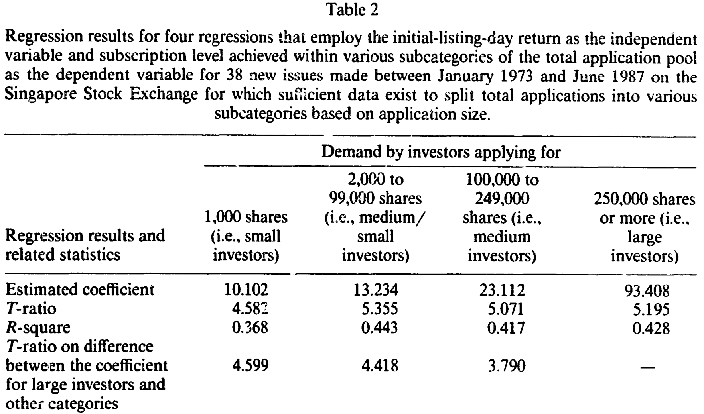
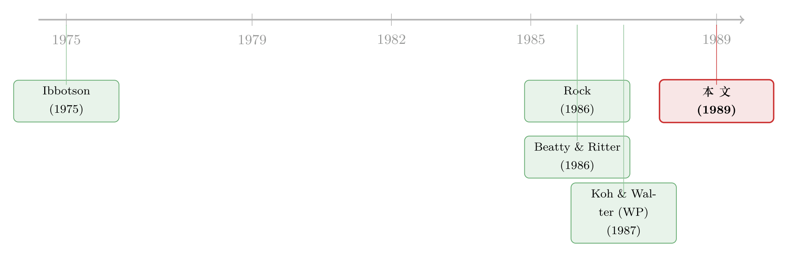

27% 的「免费午餐」，为什么你永远只能抢到那盘凉的？
本文读的是 Koh & Walter (1989, Journal of Financial Economics)：新股上市首日平均有约 27% 的超额收益，看上去是一顿白送的午餐；但一旦把「你到底能抽中多少股」这件事算进去，这顿午餐就凉得只剩无风险利率——而这，正是 Rock「赢家的诅咒」模型最干净的一次直接检验。
1 一个二十年没人能直接验证的猜想
先从一个所有人都知道、却没人能解释干净的事实说起。
新股（unseasoned new issues，即首次公开发行的股票）上市第一天，价格几乎总是高于发行价。从 Ibbotson (1975) 起，这个「新股折价」(IPO underpricing) 的现象就被反复记录，量级大得离谱——动辄百分之十几、二十几。换句话说，只要你能在发行价上申购到股票，上市当天卖掉，账面上就是一笔稳赚的钱。
可问题来了：天底下哪有白捡的钱？如果真有 27% 的无风险收益摆在那里，套利者早该蜂拥而入，把它抹平。它为什么能年复一年地存在？（关于「这折价到底是真是假」的争论，可参见《新股到底是「打折」卖，还是「溢价」卖？》。）
1986 年，Kevin Rock 给出了一个极漂亮的答案——赢家的诅咒（winner's curse）。他说：市场上有两类申购者，一类「知情」(informed)，一类「不知情」(uninformed)。知情者只在新股真的便宜（折价）时才去抢；遇到贵的（溢价）他们扭头就走。于是不知情者面对的是一场被做了手脚的游戏：好货被知情者挤占，他抽中的概率被压得很低；烂货没人跟他抢，他反而满载而归。平均下来，不知情者拿到的，是「少量的赢家 + 大量的输家」。要让这群人不退场、继续给新股捧场，发行人必须留下一个正的折价作为补偿——刚好补到他们的期望收益等于无风险利率为止。
这套逻辑自洽得让人拍案。但它有一个致命的实证软肋：Rock 的核心变量——「不同申购规模下的获配概率」——几乎在任何市场都看不到。 承销商怎么分配新股，是一笔黑箱里的暗账，他们也不愿意公开（论文里直说了：underwriters are reluctant to release these data）。没有这个概率，你就没法把「账面收益」折算成「我真正能拿到手的收益」，Rock 模型也就无从直接检验。
于是，一个自然的问题是：到哪儿去找一个会把配给规则公开的市场？
2 识别策略：新加坡这台「透明的抽签机」
这正是本文的巧妙之处——它不靠计量上的花活，而靠一个独一无二的制度安排。
新加坡证券交易所（Singapore Stock Exchange, SSE）的新股发行有一个别处罕见的特征：当新股被超额认购时，用来配给的「抽签规则」是公开披露的。抽签（balloting，即从所有申请中随机抽取）在公开场合进行，由新加坡金融管理局（MAS）的代表监督；而且它是「公平」的——同一申购规模的所有申请，被抽中的概率完全相等。换句话说，申购同样数量股票的人，面对的是一场童叟无欺的公平游戏。
这意味着什么？意味着对每一只新股，研究者都能实打实地算出「申购规模为 n 时的获配概率」。Rock 模型里那个看不见的黑箱变量，在新加坡是写在报纸上的。
这就是本文识别力的来源：不是工具变量，不是断点，而是一个把「分配概率」从私域搬到公域的制度。在别的市场，你只能看到收益；在新加坡，你能同时看到收益和你抽中它的概率——而后者才是 Rock 模型的命门。
数据是手工攒出来的。作者从 1973 年 SSE 成立到 1987 年 6 月，找出全部 70 只新股，再去交易所、翻《商业时报》和《海峡时报》、甚至逐一打电话给公司和承销商，最终为 66 只（70 只中的 66 只）拿齐了配给信息。首日价格取自 SSE 的成交摘要，发行价、发行股数、承销商、申购截止日取自招股书，无风险利率取自 MAS 的公开出版物。观测单位是「每只新股 × 每种申购策略」（申购 1 到 1,000 手，每手 1,000 股）。
有了这套数据，先把最朴素的「账面收益」算出来。对每只新股 i，首日超额收益定义为首日价格相对发行价的对数收益，减去从申购到上市这段时间的无风险收益：
$$ R_i = \ln\!\frac{P_{i,1}}{P_{i,0}} \;-\; r_{f,i} $$
其中 \(P_{i,1}\) 是上市首日成交价，\(P_{i,0}\) 是认购价，\(r_{f,i}\) 是申购到上市期间连续复利的无风险收益。把 66 只股票一平均——
无论你采用一手还是一千手的申购策略，平均超额收益都稳稳地落在 0.27（约 27%）附近，t 值在 4.01 到 4.24 之间。哪怕把申购成本（资金占用利息 + 每笔约 S\$5 的固定成本）算进去，差别也不到半个百分点。「新股折价之谜」结结实实地摆在这里。

Figure 1: Average initial-listing-day excess return for 66 new issues made between January 1973 and
3 赢家的诅咒，是怎么「显形」的
接着，关键的一步来了：把配给概率请进来。
作者画出「获配概率随申购规模如何变化」的曲线，并按事后是否折价，把样本拆成折价（57 只）和溢价（9 只）两组。三个事实一下子全冒了出来。
第一，配给系统系统性地偏袒小投资者。 申购 1,000 股时获配概率是 0.35，而申购 100 万股时只有 0.16——还不到前者的一半。小户更容易抽中。
第二，赢家的诅咒清晰可见。 在溢价股（首日亏钱的那些）里获配的概率，大约是折价股（首日赚钱的那些）里获配概率的三倍。也就是说，越是该躲的烂货，越容易落到你手里；越是该抢的好货，越抽不中。
第三，折价股（57 只）远多于溢价股（9 只）。 好货确实更多，可你偏偏抽不到。

Figure 3: Probability of receiving an allocation of shares in 66 new issues made between January
这三点合在一起，恰好就是 Rock 笔下那个被做了手脚的游戏。我们可以把 Rock 的均衡浓缩成一个关于不知情投资者期望收益的恒等式——注意这是对 Rock 逻辑的提炼，便于看清机制：
左边第一项的概率很小（好货抽不到），第二项的概率很大（烂货躲不开），一正一负相抵，最后的等号——期望收益等于无风险利率——正是 Rock 说的「折价是为了把不知情者留在场内」的均衡。
那么，理论说收益会被概率「吃掉」，数据里到底吃掉了多少？
4 反转：那顿午餐，端到你面前就凉了
这是全文最重要的一击。
作者对每只新股、每种申购策略，用该策略实际抽中的股数去加权它的收益，再扣掉申购成本，然后跨 66 只股票平均。换句话说，把图 1 里那个「假设你能全额拿到」的账面收益，换成「你真正拿到手」的收益。
结果，27% 的超额收益塌了。计入配给之后，各种申购策略的平均超额收益的 t 值全部小于 1.0——唯一的例外是「只申购一手」这种最极端的小户策略，t 值也不过 1.51。统计上，你再也无法拒绝「不知情者只赚到无风险利率」这个原假设。
注意这里一个微妙的陷阱：只申购一手时，54 只赚、12 只亏，看似胜率很高。但别忘了——溢价股的获配概率本就是折价股的约三倍，用「首日涨跌的符号」做二项检验会高估显著性。把概率算进去，这点优势也就烟消云散了。
而且这个「消失」非常稳健。作者按发行规模把样本再切三刀（22 只最大、中等、最小），计入配给后，三组的超额收益 t 值几乎全部小于 1：大盘股 t<0.95，中盘股普遍为负且 t<0.61，小盘股略高但也只在 0.63–1.33。按承销商身份切（新加坡发展银行 DBS 的 25 只、几家常客承销商的 22 只、其他 19 只）也是同样的故事。无论怎么分组，那顿午餐都是凉的。

Figure 5: Average initial-listing-day excess return for 66 new issues made between Januaq 1973 and
到这里，本文的核心论点已经完整：新股折价的「异象」，在不考虑配给时触目惊心；一旦把赢家的诅咒——即配给对折价与溢价的差别对待——纳进来，异象就消失了。 这正是 Rock 模型的预言。（这条「赢家的诅咒压平了散户收益」的逻辑，在别的市场也被反复验证，可参见《新股「打折」的钱，到底进了谁的口袋？》 与《12% 的「免费午餐」，为什么端到你面前就凉了？》。）
5 还有半步：发行人是不是「理性地」定了价
但真正关键的一步，其实藏在 Rock 模型一个常被忽略的前提里。Rock (1986) 强调：折价之所以有意义，前提是不知情需求会随发行价的下调而扩张——否则发行人凭什么要把钱留在桌上？
于是作者用申购规模作为「信息」的代理：申购越大，越可能是知情者。他们把各规模档位申购的股数占发行总量的比例，对首日收益做回归（如表 2）。

Table 2
证据很有冲击力。最小档（1,000 股，最「不知情」）的系数是 10.102（t=4.582），意味着折价每多 1%，小户申购量增加约 10%——他们确实对折价有反应。但最大档（25 万股以上）的系数高达 93.408（t=5.195），大户的敏感度差不多是小户的九倍，两者之差的 t 值高达 4.599。中间两档分别是 13.234 和 23.112，单调递增。
更进一步，Table 1 里那串相关系数同样指向一个方向：小户「申购比例」与首日收益的相关只有 -0.088，中/小户是显著的 -0.363，而大户是显著为正的 0.275——大户追着折价跑，小户反而和发行成败负相关。但注意，配给系统偏袒小户这件事，又把小户「获配比例」与收益的负相关缓冲到了 -0.064。naive 的小投资者，被配给机制悄悄保护着；大投资者则一路执行着增加财富的申购策略，代价由小户承担。 而超额认购倍数与首日收益的 Spearman 秩相关高达 0.952（1% 显著）——折价越多，抢得越凶，这是全市场的现象。
最后一块拼图：发行人定价是否理性？作者反推「单靠不知情需求就能把发行足额认购」的那个价格，看它是否低于实际发行价。用最严格的不知情定义（只算申购 1,000 股的人），38 只里有 20 只满足；一旦把不知情需求放宽到申购 5 万股以内，全部 38 只都满足理性发行人行为。一个生动的例子是 Avimo Singapore：单单申购 1,000 股的投资者就有 18,740 人，整只发行被超额认购了 104 倍。发行人确实把价定在了「不知情需求足以撑起发行」之上——和 Rock 的均衡严丝合缝。
6 文献脉络
把这条线捋一捋。
最早是 Ibbotson (1975) 把「新股上市首日正收益」这个事实钉进了文献，留下一个「reward without risk」的谜。此后二十年，解释层出不穷，但大多停留在「为什么会有折价」的层面。真正的转折是 Rock (1986)——他用赢家的诅咒给出了一个均衡解释：折价不是失误，而是为补偿不知情者承受的逆向选择而内生出来的必要折扣。几乎同时，Beatty & Ritter (1986) 在 Rock 框架上接力，把折价与发行的「事前不确定性」、承销商声誉联系起来，让这套理论有了更丰富的实证含义。（关于「好公司主动贱卖」的另一条信号理论支线，可参见《好公司为什么自愿把新股『贱卖』给你？》。）
但 Rock 模型始终缺一次直接检验——因为没人能观测到配给概率。Koh & Walter 的早期工作（1987）已经盯上了新加坡这个市场的透明配给，本文（1989）则是把这块独特的数据用到极致：第一次把「获配概率」这个 Rock 模型的核心变量摆上台面，证明异象在计入配给后消失。它在这条脉络里的位置，是从「解释折价」到「直接验证折价机制」的那一跃。

7 评论与延伸（Q&A + 研究方向）
(a) 几个可能的疑问
Q：异象「消失」会不会只是样本太小、被噪声淹没了？
这是最该担心的。66 只新股、9 只溢价股，确实单薄。但作者的逻辑不是「t 值不显著所以没异象」，而是展示了一个结构性的转换：同一批数据，不计配给时 t≈4，计入配给后 t<1，而中间的桥梁（赢家的诅咒、获配概率随规模递减）都被独立地观测到了。是机制、而非单纯的统计功效，撑起了结论。
Q：用「申购规模」代理「是否知情」，靠谱吗？
这是全文最大的识别假设。它合理，但不完美。大额申购更可能来自机构/知情者，这没错；可现实里知情者也可能拆单规避——论文承认 SSE 早年确实有人把大单拆成小单去蹭小户的优待，后来被立法禁止（多重申购一律作废）。Table 1 的证据显示「gaming」程度不高，但代理的内生性始终是个隐忧。
Q：「计入配给后收益≈无风险利率」，是不是因为申购成本被故意算高了？
不是。作者明确做了拆分：申购成本（利息 + 固定费用）单独只能解释不到 0.5% 的收益差异，量级远小于配给的影响。真正把 27% 压平的是「好货抽不到、烂货躲不掉」的配给，而非交易成本。
Q：新加坡的结论能外推到美国吗？
要小心。本文的全部识别力来自新加坡「公开抽签 + 公平博弈」的制度。美国是承销商相机配售，黑箱操作，既看不到概率，配给也未必公平。所以本文证明的是「在一个配给公平且可观测的市场里，Rock 模型成立」；它不能直接断言美国的折价同样被赢家诅咒解释——那里还混着承销商的自由裁量、关系配售等别的力量。
Q：折价股 57 : 溢价股 9，会不会本身就说明发行人「定价偏低」而非「理性」？
表面看是。但 Rock 的均衡本就预测折价占多数——因为折价是吸引不知情者的必要补偿。关键检验不在「折价是否普遍」，而在「发行价是否高于不知情需求独力撑起发行的临界价」。作者的 38 只全部通过（放宽定义后），这才是「理性发行人」的证据。
Q：和「承销商托价」(price support) 的解释怎么区分？
本文没有直接处理托价。这是一个真实的竞争性解释：若承销商在二级市场托住了首日价格，观测到的正收益可能部分是人为的。新加坡是 firm-commitment 发行，但本文未提供 aftermarket 干预的细颗粒证据——这是它没能堵死的一个口子。
(b) 几个可能的研究问题与提案
1. 把「透明配给」实验搬到公司债的新发市场
【经济故事】公司债一级市场同样存在「新债首日折价」(underpricing) 与配给——大单常被承销商优先满足，散户和小机构面对类似的逆向选择。如果能找到一个公开披露配债规则的市场（如某些受监管的零售债发行），就能把 Koh-Walter 的检验原样复制到信用市场，看赢家的诅咒是否同样压平了「新债折价」。 【可行性】中。难点在于找到配给规则可观测的债券市场；中国部分公开发行、或新加坡/香港的零售债或许可行。识别策略与本文同构：计算获配概率，做配给加权收益。数据是瓶颈。
2. 外资持有人是「知情者」还是「不知情者」？
【经济故事】在跨境新股/新债配售中，外资常被假定为信息劣势方（不知情）。但 Koh-Walter 的框架提供了一把尺子：若外资在折价发行中的获配比例系统性偏低、在溢价发行中偏高，则他们承受了赢家的诅咒；反之则说明他们其实是知情的。这能给「外资到底懂不懂本地市场」的老争论一个基于配给数据的回答。 【可行性】中高。需要按投资者国别拆分的申购/配售明细，这在韩国、台湾等设有外资板的市场可得。识别：把本文 Table 2 的回归按投资者类型重做，比较外资与本地的折价敏感度系数。
3. 配给加权收益，作为新股「流动性溢价」的清洗器
【经济故事】新股首日收益里既有折价补偿，也可能掺着上市初期的流动性溢价。本文证明配给能解释掉折价那一块；那么把配给加权后残余的那点收益，是否恰好对应二级市场的流动性（买卖价差、深度）？这能把「折价」与「流动性补偿」两种力量分离。 【可行性】高。所需的二级市场微观数据（价差、成交量）在现代交易所唾手可得，配给数据是唯一约束。可在披露配给的市场上，用配给加权收益对首日流动性指标回归。
4. 当配给从「公平抽签」变成「相机配售」：一次制度断点
【经济故事】若某市场在某时点从公开抽签改为承销商自由裁量（或反向改革），就构成一个天然的政策实验：赢家的诅咒的强度、散户的实际收益、发行人的定价策略会如何变化？这能直接检验「配给机制本身」对折价均衡的因果作用。 【可行性】中。需要找到一次干净的配给制度改革并锁定生效日（这本身就不容易，参见跨市场常见的「改革落地滞后」问题）。识别：以制度切换为断点做事件研究或 DiD。
8 参考文献
- Ibbotson, R.G. (1975). Price performance of common stock new issues. Journal of Financial Economics 2(3), 235–272.
- Rock, K. (1986). Why new issues are underpriced. Journal of Financial Economics 15(1–2), 187–212.
- Beatty, R.P. and Ritter, J.R. (1986). Investment banking, reputation, and the underpricing of initial public offerings. Journal of Financial Economics 15(1–2), 213–232.
- Koh, F. and Walter, T. (1989). A direct test of Rock's model of the pricing of unseasoned issues. Journal of Financial Economics 23(2), 251–272.
评述者的判断。 本文最大的贡献，是把一个二十年无法直接检验的理论，用一个独特市场的制度细节「打开」了。它的方法论启示甚至超过结论本身：当一个核心变量（配给概率）在大多数市场是黑箱时，与其用计量手段去近似它，不如去找一个把这个变量公开的制度环境——识别力往往藏在制度里，而非模型里。结论也漂亮：27% 的异象在计入赢家的诅咒后干净地消失，且对发行规模、承销商身份都稳健。
对识别的担忧有三。其一，「申购规模 = 是否知情」这个代理是全文的阿喀琉斯之踵，拆单 gaming 虽被立法禁止，内生性仍在。其二，9 只溢价股撑起「三倍获配概率」这一关键事实，样本实在太薄，我更希望看到 bootstrap 或更长样本的稳健性。其三，本文几乎没处理承销商的 aftermarket 托价——若首日价格被人为托住，配给加权收益的解读会被污染。
后续我最想看到的，是把这套「配给加权收益」的尺子搬到信用市场和跨境配售里去：公司债新发的赢家诅咒有多强？外资在配给中究竟是被宰的羔羊还是埋伏的猎手？这些问题，Koh 和 Walter 在 1989 年其实已经把工具准备好了——缺的只是另一个愿意公开它配给规则的市场。